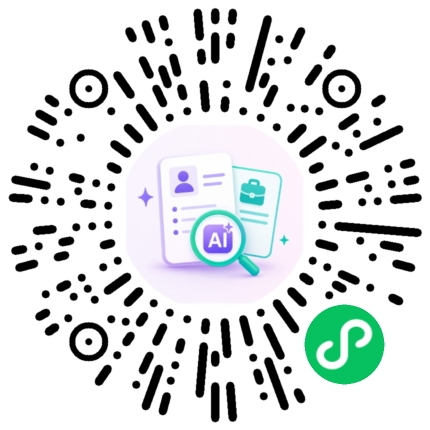

从产品定位、Prompt 工程到全栈开发上线，独立打造并持续迭代的一组 AI 产品与方法论工具
独立设计并开发的岗位匹配微信小程序：从产品定位、PRD 撰写到六维评分引擎设计，覆盖硬性门禁与技能、经验、软实力等多维匹配，针对不同市场与层级设置差异化权重，完成从匹配评分到面试准备包的全链路 AI 报告生成。

基于 Claude Skill 机制搭建的一套流程自动化工具，涵盖简历建档、JD 匹配简历生成、ATS 兼容性检测、面试备考资料生成 4 个模块，形成一条完整的智能体工作流。
面向任意行业的通用知识体系梳理方法论 Skill：分阶段引导、MECE 提纯、四类逻辑线搭建、专业查漏补缺，产出脑图大纲、关联对照表与知识图谱。发布至 SkillHub 后已被使用者下载 165 次。
面向 HR / 招聘方视角的简历-JD 匹配 Chrome 插件，复用「Fit简历」同源的六维评分引擎，把匹配能力从 C 端小程序延伸到浏览器端，支持批量岗位筛选，并探索多模型、多招聘平台适配。
作为一名资深的AI产品经理，我在B端和C端领域都拥有丰富的产品经验。从SaaS产品的商业化到AI驱动的创新解决方案，我致力于帮助企业实现数字化转型和营收增长。
我相信AI技术能够深刻改变我们的工作方式，通过智能体工作流和自动化解决方案，帮助团队提升效率、降低成本，实现真正的数字化升级。
主导 2 款音视频 SaaS 产品从 0 到 1 建设，累计创造超 1.2 亿元营收，单产品曾实现季度营收环比增长 140%。在 C 端成功优化商品与转化路径，3 个月内提升支付转化率 5 个百分点、复购率 7 个百分点。
打造行业首款 AI 数字人教学产品，落地 60+教育机构，助其降低 80% 的特定场景运营成本。主导构建支撑日均百万级并发的直播架构。
负责 300 万用户的 App 产品，主导图像引擎升级至 600dpi 打印分辨率。从 0 到 1 搭建 UGC 内容生态，实现用户停留时长提升 30%，社区核心创作者数超 500。
曾管理 11 人产研团队并获得公司年度 Top 级奖项。通过建立数据驱动与敏捷流程，将产品稳定性提升 50%。
期待与您探讨AI产品和商业化的无限可能
微信扫码体验 Fit简历